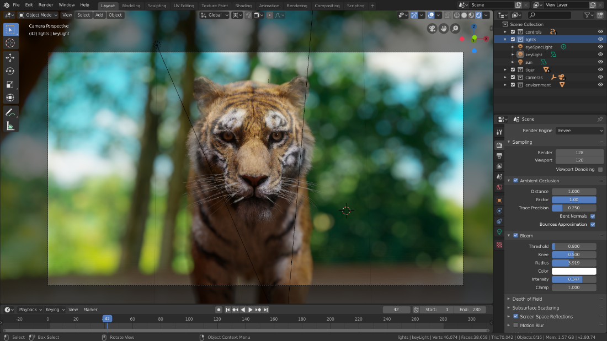
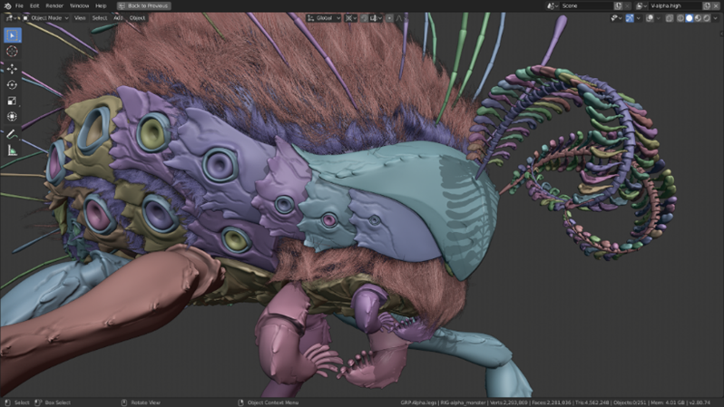

MENU
Upodabljanje
Cycles
Cycles je renderski pogon za sledenje poti/path-tracing render engine, ki je oblikovan tako, da je interaktiven in enostaven za uporabo hkrati pa podpira mnogo funkcij.
V Blender je vključen že od verzije 2.61, ki je izšla leta 2011.
Cycles podpira z razširitvami AVX, AVX2 in AVX-512 pospeševanje procesorja v sodobni strojni opremi Intel in AMD.
EEVEE
EEVEE je PBR renderer v realnem času vključen v Blender od verzije 2.8 naprej.
Poimenovan je po pokemonu Eevee, kasneje so ga spremenili v kratico za “Extra Easy Virtual Environment Engine”.
Fokusiran je na hitrost in interaktivnost medtem, ko dosega cilje upodabljanja PBR materialov.
Lahko se ga uporablja interaktivno v 3D Viewportu, da ustvari upodobitve zelo dobre kvalitete.
EEVEE materiali so ustvarjeni z uporabo istih senčnih vozlišč/shader nodes kot Cycles kar olajša upodabljanje obstoječih prizorov.
Za uporabnike Cycles je EEVEE odličen za predogled materialov v realnem času.
Spodnja slika je primer zmodeliranega tigra v EEVEE 3D viewportu, ki dobro prikazuje kvaliteto, ki jo lahko dosežemo s programom.

Za razliko od Cycles, EEVEE ni raytrace pogon za upodabljanje.
Namesto izračunavanja vsakega žarka svetlobe uporabi proces rasterizacija/rasterization.
Rasterizacija s številnimi algoritmi ocenjuje način interakcije svetlobe z objektom in materiali.
Čeprav je EEVEE oblikovan tako, da uporablja PBR principe, ni popoln in zato bo Cycles vedno zagotavljal bolj fizikalno natančnejše upodobitve,
ker uporablja rasterizacijo in veliko omejitev.
GPU upodabljanje
Cycles podpira upodabljanje z grafičnim procesorjem, ki se uporablja za pospešitev časa upodabljanja. Na voljo so trije načini upodabljanja z GPU:
- • CUDA, ki je prednostna metoda za starejše Nvidia grafične kartice,
- • OptiX, ki uporablja stroje zmogljivosti sledenja žarkom, Nvidiine Turng arhitekture in Amprere arhitekture.
- • OpenCl, ki podpira upodabljanje na AMD grafičnih karticah,
- • Intel Iris in Xe, ki sta bila dodana v verziji 2,92.
Podprtih je tudi več grafičnih procesorjev, s katerimi je mogoče ustvariti upodabljajočo farmo,
čeprav več grafičnih procesorjev ne poveča razpoložljivega pomnilnika, ker lahko vsak GPU dostopa le do svojega pomnilnika.
Od verzije 2.9 je ta omejitev kartic SLI odpravljena pri sistemih Nvidia z NVlink.
Integrator
Integrator je osrednji algoritem za upodabljanje, ki se uporablja za izračune osvetlitve.
Cycles trenutno podpira integrator sledenja poti z posrednim vzorčenjem svetlobe/direct light sampling.
Dobro deluje za različne nastavitve osvetlitve. Žarki se iz kamere prenašajo v prizorišče in se odbijajo dokler ne najdejo vira svetlobe
(svetilka, material predmeta, ki oddaja svetlobo ali ozadje sveta), ali dokler se preprosto ne uničijo glede na maksimalno število odbojev določenih v nastavitvah za svetlobno pot za upodabljajočo napravo/render.
Za iskanje svetilk ali površin, ki oddajajo svetlobo, se uporabljata posredno vzorčenje svetlobe (žarek sledi dvosmerni porazdelitveni funkciji razpršitve po površini ali BDSF)
in neposredno vzorčenje svetlobe (izberete vir svetlobe in sledite žarku proti njemu).
Materiali
Materiali definirajo videz mrež, krivulj NURBS in drugih geometrijskih objektov.
Sestavljeni so iz treh senčnikov, ki določajo videz površine mreže, notranjo prostornino in premik površine.
Površinski senčnik
Površinski senčnik določa interakcijo svetlobe z površino mreže.
Ena ali več dvosmernih porazdelitvenih funkcij razpršitve ali BSDF lahko določa ali se prihajajoča svetloba odbija, lomi v mrežo ali absorbira/absorb.
Vrednost alfa je eno od meril prosojnosti.
Prostorninski senčnik
Kadar površinski senčnik ne odbija ali absorbira svetlobe vstopi v prostornino (prenos svetlobe).
Če ni določen senčnik prostornine bo prešla naravnost skozi na drugo stran mreže ali pa se bo lomila.
Če je definiran, senčnik prostornine opisuje interakcijo svetlobe, ko ta prehaja skozi volumen mreže.
Svetloba se lahko razprši, absorbira ali celo oddaja na katerikoli točki volumna.
Senčnik premikanja
Obliko površine se da spremeniti s senčniki premikanja.
Na ta način lahko uporabimo teksture, da naredimo površine mreže bolj podrobne.
Glede na nastavitve je lahko premik navidezen in spreminja samo normale površine, da da vtis premika, znan tudi kot kartiranje udarcev(bump mapping).
Workbench
Workbench je pogon za upodabljanje optimiziran za hitro upodabljanje med modeliranjem in predogledom animacije.
Namenjen je upodabljanju končnih slik. Glavna naloga Workbencha je, prikazuje prizor v 3D viewportu.
Privzeto je, da se za senčenje in osvetljevanje predmetov 3D viewporta, uporablja program Workbench.
Nastavitve senčenja se lahko menja v 3D viewport’s Shading popover.
Workbench podpira dodeljevanje naključnih barv predmetom, da se vsi vizualno razlikujejo.
Obstajajo tudi drugi mehanizmi za barvanje na primer materiali, barve oglišč in teksture.
Ima tudi rentgenski način za pregledovanje predmetov in senčenje votlin ter senc, ki pomaga prikazovati podrobnosti predmetov.
Podpira veliko svetlobnih mehanizmov, kot so studio lighting in MatCaps.
Spodnja slika dobro prikazuje zmogljivosti pogona, da izbere in uporabi naključne barve in sence, da prikaže podrobnosti.
